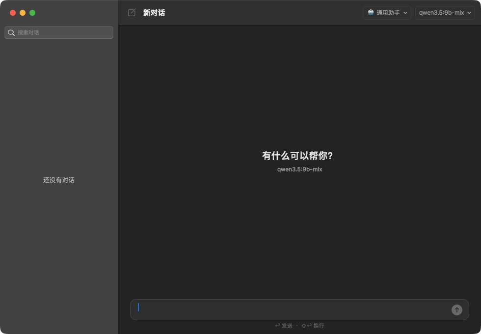

软件 / macOS 应用
Aide
本地 AI 桌面入口
在 Mac 上用快捷键唤起本机 AI，处理选中文字、截图和桌面任务。
开发中 仍在开发中，功能和界面会继续变化，不是正式发布的产品。

这是什么
SwiftUI / AppKit 原生外壳与 Python 核心，使用本机 Ollama 模型。Quick Panel 处理选中文字和桌面工具请求，Workspace 保存对话与搜索；新增朗读、日历操作，以及按会话主动开启的联网搜索和命令行。会改动数据的操作先显示具体内容，等待确认。
核心功能
- ⌘⌃L 唤起 Quick Panel，处理选中文字或桌面请求
- ⌘⌃S 框选截图进入对话，⌘⌃R 朗读选中文字
- Workspace：对话搜索、流式 Markdown、重新生成与自定义 Agent
- 笔记、提醒事项和日历操作，修改前确认
- 按会话主动开启搜索或命令行，凭据保存在系统钥匙串
说明
这里介绍的是当前原生版源码。公开 v1.4.0 安装包仍为旧 PyQt5 版本；原生版请按仓库说明本地构建，尚未公证。启用联网搜索后，模型的搜索查询会发送至所配置的提供方。
界面截图
